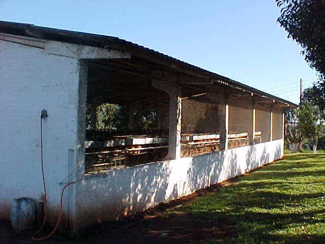
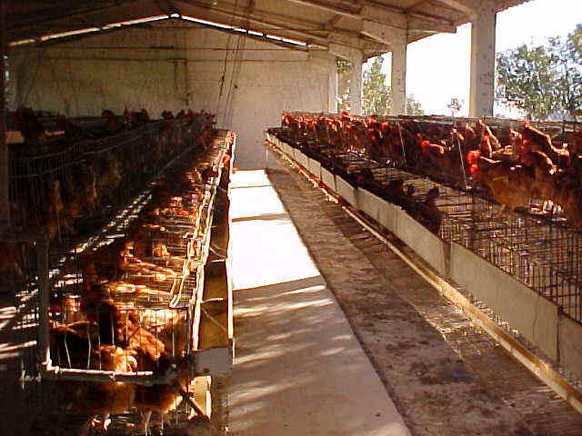

Avicultura de Postura
No sistema de confinamento as 715 galinhas da raça Isa Brown, chegam a produzir 550 ovos por dia.
A produção excedente ao consumo dos alunos é comercializada no próprio Colégio e em estabelecimentos comercias da cidade.

